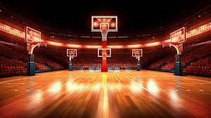

Краткая история:
Баскетбол был изобретен в 1891 году Джеймсом Нейсмитом в Спрингфилде,
штат Массачусетс.

Основные события:
- 1891 - Изобретение игры.
- 1936 - Баскетбол становится олимпийским видом спорта.
- 1946 - Основание НБА.
Дополнительные ресурсы:
Узнайте больше об истории баскетбола на сайте:
Wikipedia.